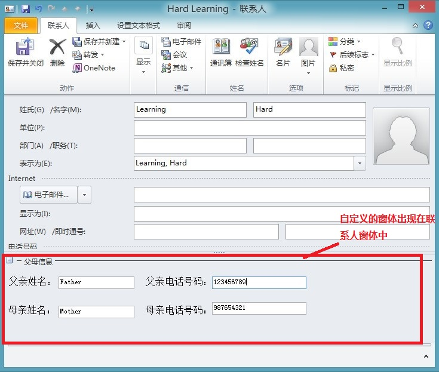

在很多时候，我们都希望联系人的窗体中有关于父母的联系方式，然后在现有的Outlook界面中却没有这样的字段来给我们填写的，本示例演示的就是通过Outlook的窗体区域窗体来自定义我们的联系人界面，在界面上加入我们自定义的控件。
在运行该示例之前，请确保本机安装Office 2010 和Visual Studio Tools For Office。该组件已经继承进Visual Studio了，所以只要本机安装了Visual Studio 2010就已经安装了这个组件，同时大家安装Visual Studio 的时候也可以留意安装的组件中的Visual Studio Tools For Office 是默认勾选的。
运行示例
步骤一、打开 “VSTOOutlook.sln” 文件来打开整个项目的解决方案，然后按F5或Ctrl+F5运行该示例，你将看到程序会自动打开Outlook程序。
步骤二、在右边的面板选择联系人，然后双击联系人列表或点击“新建联系人”按钮，你将看到联系人窗口中多出了自定义的控件，具体可以参考下图：

步骤一、使用Visual Studio模板创建Outlook 外接程序项目
步骤二、右键项目，选择添加->新建项目->Outlook窗体区域。
步骤三、点击下一步下一步，在标识将显示此窗体区域的邮件类窗体中选择“联系人”复选框。
步骤四、添加自定义控件到窗体区域中，该示例添加了四个Lable控件和四个TextBox Control
步骤五、在窗体区域的后台代码实现后台逻辑。
// 对应的联系人(Contact)对象
private Outlook.ContactItem contactItem;
// 自定义属性对象
private Outlook.ItemProperty MotherName = null;
private Outlook.ItemProperty MotherTelNumber = null;
private Outlook.ItemProperty FatherName = null;
private Outlook.ItemProperty FatherTelNumber = null;
// 在显示窗体区域之前发生。
// 使用 this.OutlookItem 获取对当前 Outlook 项的引用。
// 使用 this.OutlookFormRegion 获取对窗体区域的引用。
private void ContactFormRegion_FormRegionShowing(object sender, System.EventArgs e)
{
// 获得FormRegion所对应的Contact对象
contactItem = this.OutlookItem as Outlook.ContactItem;
// 在从自定义属性中取出值时，首先确保自定义属性不为空。
EnsureProperties();
// 从联系人的自定义属性中取出值为控件赋值
txbMotherName.Text = MotherName.Value;
txbFatherName.Text = FatherName.Value;
txbMotherTel.Text = MotherTelNumber.Value;
txbFatherTel.Text = FatherTelNumber.Value;
}
// 在关闭窗体区域时发生。
// 使用 this.OutlookItem 获取对当前 Outlook 项的引用。
// 使用 this.OutlookFormRegion 获取对窗体区域的引用。
private void ContactFormRegion_FormRegionClosed(object sender, System.EventArgs e)
{
// 释放对象
System.Runtime.InteropServices.Marshal.FinalReleaseComObject(contactItem);
contactItem = null;
}
// 确保所有自定义属性不为空
private void EnsureProperties()
{
EnsureItemProperty(ref MotherName, "montherName", Outlook.OlUserPropertyType.olText);
EnsureItemProperty(ref FatherName, "fatherName", Outlook.OlUserPropertyType.olText);
EnsureItemProperty(ref MotherTelNumber, "motherTelNumber", Outlook.OlUserPropertyType.olText);
EnsureItemProperty(ref FatherTelNumber, "fatherTelNumber", Outlook.OlUserPropertyType.olText);
}
// 确保项目属性不为空引用
private void EnsureItemProperty(ref Outlook.ItemProperty property, string name, Outlook.OlUserPropertyType propertyType)
{
// 如果自定义属性为空时
// 首先从联系人项关联的属性集合中获得属性对象
// 如果项目集合中还不存在该属性时，就把该属性名称添加进ItemProperties集合中
if (property == null)
{
property = contactItem.ItemProperties[name];
if (property == null)
{
property = contactItem.ItemProperties.Add(name, propertyType);
}
}
}
// 父亲名字修改事件
private void txbFatherName_TextChanged(object sender, EventArgs e)
{
// 保存值到自定义的属性中
FatherName.Value = txbFatherName.Text;
}
// 父亲的电话号码修改事件
private void txbFatherTel_TextChanged(object sender, EventArgs e)
{
// 保存值到自定义的属性中
FatherTelNumber.Value = txbFatherTel.Text;
}
// 母亲名字修改事件
private void txbMotherName_TextChanged(object sender, EventArgs e)
{
// 保存值到自定义的属性中
MotherName.Value = txbMotherName.Text;
}
// 母亲的电话号码修改事件
private void txbMotherTel_TextChanged(object sender, EventArgs e)
{
// 保存值到自定义的属性中
MotherTelNumber.Value = txbMotherTel.Text;
}
// 对应的联系人(Contact)对象 private Outlook.ContactItem contactItem; // 自定义属性对象 private Outlook.ItemProperty MotherName = null; private Outlook.ItemProperty MotherTelNumber = null; private Outlook.ItemProperty FatherName = null; private Outlook.ItemProperty FatherTelNumber = null; // 在显示窗体区域之前发生。 // 使用 this.OutlookItem 获取对当前 Outlook 项的引用。 // 使用 this.OutlookFormRegion 获取对窗体区域的引用。 private void ContactFormRegion_FormRegionShowing(object sender, System.EventArgs e) { // 获得FormRegion所对应的Contact对象 contactItem = this.OutlookItem as Outlook.ContactItem; // 在从自定义属性中取出值时，首先确保自定义属性不为空。 EnsureProperties(); // 从联系人的自定义属性中取出值为控件赋值 txbMotherName.Text = MotherName.Value; txbFatherName.Text = FatherName.Value; txbMotherTel.Text = MotherTelNumber.Value; txbFatherTel.Text = FatherTelNumber.Value; } // 在关闭窗体区域时发生。 // 使用 this.OutlookItem 获取对当前 Outlook 项的引用。 // 使用 this.OutlookFormRegion 获取对窗体区域的引用。 private void ContactFormRegion_FormRegionClosed(object sender, System.EventArgs e) { // 释放对象 System.Runtime.InteropServices.Marshal.FinalReleaseComObject(contactItem); contactItem = null; } // 确保所有自定义属性不为空 private void EnsureProperties() { EnsureItemProperty(ref MotherName, "montherName", Outlook.OlUserPropertyType.olText); EnsureItemProperty(ref FatherName, "fatherName", Outlook.OlUserPropertyType.olText); EnsureItemProperty(ref MotherTelNumber, "motherTelNumber", Outlook.OlUserPropertyType.olText); EnsureItemProperty(ref FatherTelNumber, "fatherTelNumber", Outlook.OlUserPropertyType.olText); } // 确保项目属性不为空引用 private void EnsureItemProperty(ref Outlook.ItemProperty property, string name, Outlook.OlUserPropertyType propertyType) { // 如果自定义属性为空时 // 首先从联系人项关联的属性集合中获得属性对象 // 如果项目集合中还不存在该属性时，就把该属性名称添加进ItemProperties集合中 if (property == null) { property = contactItem.ItemProperties[name]; if (property == null) { property = contactItem.ItemProperties.Add(name, propertyType); } } } // 父亲名字修改事件 private void txbFatherName_TextChanged(object sender, EventArgs e) { // 保存值到自定义的属性中 FatherName.Value = txbFatherName.Text; } // 父亲的电话号码修改事件 private void txbFatherTel_TextChanged(object sender, EventArgs e) { // 保存值到自定义的属性中 FatherTelNumber.Value = txbFatherTel.Text; } // 母亲名字修改事件 private void txbMotherName_TextChanged(object sender, EventArgs e) { // 保存值到自定义的属性中 MotherName.Value = txbMotherName.Text; } // 母亲的电话号码修改事件 private void txbMotherTel_TextChanged(object sender, EventArgs e) { // 保存值到自定义的属性中 MotherTelNumber.Value = txbMotherTel.Text; }
Outlook 窗体区域概述
http://msdn.microsoft.com/zh-cn/library/aa942843(v=VS.80).aspx
Customizing the 2007 Office Fluent User Interface Using Visual Studio 2005 Tools for the Office System SE (Part 2 of 2)
http://msdn.microsoft.com/en-us/library/bb964682
Chapter 13: Creating Form Regions
http://msdn.microsoft.com/en-us/library/cc513845.aspx
ItemProperty 对象 （Outlook）
http://msdn.microsoft.com/zh-cn/library/office/ff863409.aspx